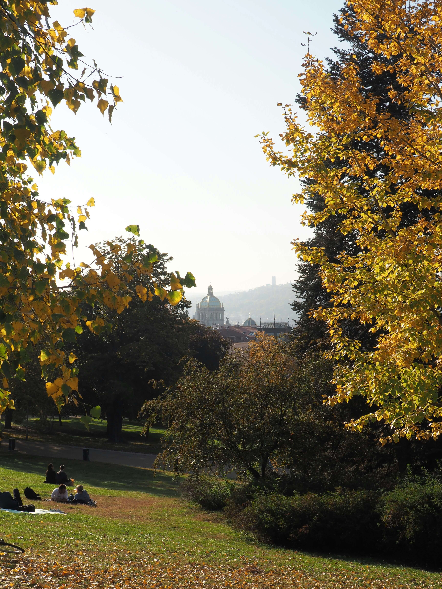

Die beste Zeit, um Prag zu besuchen
Jede Jahreszeit erzählt eine andere Geschichte. Hier ist, wann die Stadt sich Ihnen am ehrlichsten zeigt.


Prag verändert sich mit dem Licht. Im Frühnebel des März wirkt die Karlsbrücke wie eine Radierung; im Hochsommer glüht sie golden und ist voller Menschen. Nach vierzig Jahren weiß ich: Es gibt keine falsche Zeit — nur unterschiedliche Städte.
Die meisten Reiseführer empfehlen Mai und September. Sie haben nicht unrecht. Aber sie verschweigen, dass der Januar seine eigene, stille Schönheit hat — wenn die Touristen fort sind und der Schnee die Dächer der Kleinseite glättet.
„Kommen Sie im November. Die Stadt gehört dann wieder denen, die sie lieben.“
Frühling, wenn die Gärten erwachen
Die Palastgärten unter der Burg öffnen Anfang April. Es ist die Zeit, in der ich meine längsten Touren plane — fünf Stunden, weil man einfach nicht aufhören möchte zu gehen.
Die Burggärten sind vor 10 Uhr fast leer. Beginnen Sie dort, bevor die Reisegruppen eintreffen.
Winter, die ehrlichste Jahreszeit
Wenn Sie Prag wirklich kennenlernen möchten, kommen Sie zwischen Dreikönig und Ostern. Die Cafés gehören wieder den Einheimischen, und die Geschichten, die ich erzähle, hallen in leeren Gassen nach.
Ziehen Sie sich warm an, planen Sie Pausen in alten Kaffeehäusern ein — und lassen Sie sich Zeit. Der Winter belohnt die Geduldigen.